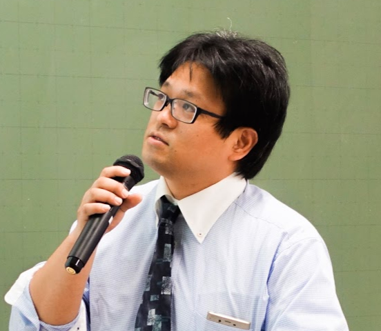

石井 育規
Yasunori Ishii

パナソニック株式会社 AIソリューションセンター
主任技師
Profile
2003年3月 岡山大学大学院自然科学研究科 知能計算機研究室
2003年4月 パナソニック株式会社
専門分野
Computer Vision, Patter Recognition, Image Processing, Computational Photography, Deep Learning
学会活動
電子情報通信学会 パターン認識メディア理解研究会専門委員 2007~2011
電子情報通信学会 画像工学研究会専門委員 2014~2018
電子情報通信学会 査読委員 2017~
画像電子学会代議員 2011~2018
国内査読無し
鏡平面への映り込みを考慮した Photometric Image-Based Rendering (セッション 2 3 次元画像技術と応用), 石井育規， 向川康博， 尺長健, 研究会講演予稿 190, 57-64
相互反射を含むシーンにおける画像の線形化と光学現象の解析 石井育規， 向川康博， 尺長健 情報処理学会研究報告コンピュータビジョンとイメージメディア (CVIM) 2003 (36 (2002-CVIM-137 …
MIRU2015 若手の会実施報告 (マルチメディア・仮想環境基礎) 満上育久， 石井育規， 河合紀彦電子情報通信学会技術研究報告= IEICE technical report: 信学技報 115 (415 … 2016
MIRU2015 若手の会実施報告 (パターン認識・メディア理解) 満上育久， 石井育規， 河合紀彦情報通信学会技術研究報告= IEICE technical report: 信学技報 115 (414), 261-268
MIRU2015 若手の会実施報告 満上育久， 石井育規， 河合紀彦， 川西康友， 久保尋之， 米谷竜， 舩冨卓哉 研究報告コンピュータビジョンとイメージメディア (CVIM) 2016 (42), 1-822016
Destination Network におけるネットワークモデルの検討 家崎遥，平川翼，山下隆義，藤吉弘宣（中部大），藤村亮太， 石井育規，築澤宗太郎（パナソニック）, 平成３０年度 電気・電子・情報関係学会 東海支部連合大会
国内査読有り
光学現象の分類基準を利用した画像の線形化 石井育規， 福井孝太郎， 向川康博， 尺長健 画像の認識・理解シンポジウム (MIRU2002), pp. II-167–176 【優秀論文セッション】
ブロック差分特徴と向き推定誤り補償を用いた横顔検出 石井育規, 今川和幸, 福宮英二, 岩佐克博, 小倉康伸 (松下電器) 画像の認識理解シンポジウム(MIRU2005)
赤司竜一，石井育規，長原一，向川康博，谷口倫一郎，八木康史， ``全方位観測による散乱光トモグラフィ'', 画像の認識・理解シンポジウム(MIRU2014), SS2-47, July, 2014.】
神谷 龍司, 川口 俊樹, 福井 宏, 石井 育規, 小塚 和紀, 羽川 令子, 築澤 宗太郎, 山内 悠嗣, 山下 隆義, 藤吉 弘亘, Convolutional-Recurrent Neural Network による自己運動識別. 第22回画像センシングシンポジウム(SSII2016) , IS2-13, 2016
古川 弘憲, 山下 隆義, 山内 悠嗣, 藤吉 弘亘, 石井 育規, 羽川 令子, 2D-QRNNを導入したDCNNによるセマンティックセグメンテーションの高精度化と高速化
第20回画像の認識理解シンポジウム (MIRU2017), 2017
国内論文誌
光学現象の分類に基づく画像の線形化 石井育規， 福井孝太郎， 向川康博， 尺長健 情報処理学会論文誌コンピュータビジョンとイメージメディア (CVIM) 44 (SIG05 (CVIM6)), 11-21
画像の線形化による光学現象の解析 向川康博， 石井育規， 尺長健 情報処理学会論文誌コンピュータビジョンとイメージメディア (CVIM) 45 (SIG08 (CVIM9)), 40-52
国際会議
"Ishii, Yasunori; Imagawa, Kazuyuki; Fukumiya, Eiji; Iwasa, Katsuhiro; Ogura, Yasunobu; ",Profile face detection using block difference feature for automatic image annotation,2006 Digest of Technical Papers International Conference on Consumer Electronics,,,337-338,2006,IEEE
Y.Ishii, T.Arai, Y.Mukaigawa, J.Tagawa, Y.Yagi, "Scattering Tomography by Monte Carlo Voting", Proc. IAPR International Conference on Machine Vision Applications (MVA2013), May. 2013. (Best Poster Award)
Y.Mukaigawa, Y.Ishii, T.Shakunaga, "Classification of Photometric Factors Based on Photometric Linearization", Proc. of Asian Conference on Computer Vision (ACCV2006), Vol.2, pp.613-622, Jan.2006.
Y.Ishii, T.Arai, Y.Mukaigawa, J.Tagawa, Y.Yagi, "Scattering Tomography by Monte Carlo Voting", The 8th International Workshop on Robust Computer Vision (IWRCV2014), Jan. 2014.
Yasunori Ishii, Reiko Hagawa and Sotaro Tsukizawa, Deep Learning using Heterogeneous Feature Maps for Maxout Networks.
In Proc. 3rd Asian Conference on Pattern Recognition 2015(ACPR2015), pages 459--463, 2015.
Reiko Hagawam, Yasunori Ishii and Sotaro Tsukizawa, Multi-staged deep learning with created coarse and appended fine categories. In Proc. 3rd Asian Conference on Pattern Recognition 2015(ACPR2015), pages 36--40, 2015.
Explain to Fix: A Framework to Interpret and Correct DNN Object Detector Predictions: Denis A Gudovskiy (Panasonic); Alec Hodgkinson (Panasonic); Takuya Yamaguchi (Panasonic); Yasunori Ishii (Panasonic); Sotaro Tsukizawa (Panasonic)
国際論文誌
"Ishii, Yasunori; FUKUI, Kohtaro; Mukaigawa, Yasuhiro; Shakunaga, Takeshi; ",Photometric linearization based on classification of photometric factors,Trans. ISP J. CVIM,44,5,11-21,2003,Information Processing Society of Japan (IPSJ)
Y.Mukaigawa, Y.Ishii, T.Shakunaga, ``Analysis of photometric factors based on photometric linearization'', Journal of the Optical Society of America A, Vol. 24, Issue 10, pp. 3326-3334, Oct.2007.
preprint
"Gudovskiy, Denis; Hodgkinson, Alec; Yamaguchi, Takuya; Ishii, Yasunori; Tsukizawa, Sotaro; ",Explain to Fix: A Framework to Interpret and Correct DNN Object Detector Predictions,arXiv preprint arXiv:1811.08011,,,,2018,
講演
全脳アーキテクチャ若手の会 関西支部 異文化交流会 "ミニドラから考えるAIエージェントの未来セッション", 2017年10月
岡山大学 スーパーグローバルカミングデー, 「パナソニックで取り組んできた研究開発事例とそこで活きた学生時代の経験」, 2017年10月
中部大学 画像情報処理, 2018年7月
国内特許
項番 出願番号 文献番号 出願日 公知日 登録日 発明の名称 出願人 FI
1 特願2018-216166 特開2019-056913 2018/11/19 2019/04/11
- 音声認識機能を用いた情報提供方法および機器の制御方法 パナソニック インテレクチュアル プロパティ コーポレーション オブ アメリカ G10L15/22,453 G06F3/16,630 G10L15/10,200@W 他
2 特願2018-037776 特開2019-028987 2018/03/02 2019/02/21
- 情報処理装置、情報処理方法およびプログラム パナソニック インテレクチュアル プロパティ コーポレーション オブ アメリカ G08G1/16@A B60R21/00,630@Z B60R21/00,626@A 他
3 特願2018-021147 特開2019-003605 2018/02/08
2019/01/10
- 情報処理装置およびプログラム パナソニック インテレクチュアル プロパティ コーポレーション オブ アメリカ G08G1/16@C
B60R21/00,624@C
B60R21/00,626@C
他
4 特願2018-002409 特開2018-205294 2018/01/11
2018/12/27
- 情報処理装置及び情報処理方法 パナソニック インテレクチュアル プロパティ コーポレーション オブ アメリカ G01C21/36
B60L11/18@A
G08G1/16@C
5 特願2018-003976 特開2018-194538 2018/01/15
2018/12/06
- 情報処理装置およびプログラム パナソニック インテレクチュアル プロパティ コーポレーション オブ アメリカ G01C3/06,120@S
G01C3/06,140
G08G1/16@C
他
6 特願2017-206860 特開2018-142297 2017/10/26
2018/09/13
- 情報処理装置およびプログラム パナソニック インテレクチュアル プロパティ コーポレーション オブ アメリカ G08G1/16@C
B60W40/04
B60W30/14
他
7 特願2017-186131 特開2018-136917 2017/09/27
2018/08/30
- 情報処理装置、情報処理方法及びプログラム パナソニック インテレクチュアル プロパティ コーポレーション オブ アメリカ G08G1/16@D
G01C21/26@A
G08G1/09@H
8 特願2017-032396 特開2018-135058 2017/02/23
2018/08/30
- 情報処理装置及びプログラム パナソニック インテレクチュアル プロパティ コーポレーション オブ アメリカ B60W50/14
B60W40/06
B60W30/00
他
9 特願2017-184071 特開2018-133072 2017/09/25
2018/08/23
- 情報処理装置およびプログラム パナソニック インテレクチュアル プロパティ コーポレーション オブ アメリカ G08G1/16@D
B60R21/00,621@C
B60R21/00,622@F
他
10 特願2017-178640 特開2018-129028 2017/09/19
2018/08/16
- 情報処理装置、情報処理方法およびプログラム パナソニック インテレクチュアル プロパティ コーポレーション オブ アメリカ G08G1/16@D
B60W30/095
B60W50/14
11 特願2017-153627 特開2018-106668 2017/08/08
2018/07/05
- 情報処理装置、情報処理方法およびプログラム パナソニック インテレクチュアル プロパティ コーポレーション オブ アメリカ G08G1/16@D
B60W40/04
B60W30/095
他
12 特願2017-153605 特開2018-106667 2017/08/08
2018/07/05
- 情報処理装置、情報処理方法およびプログラム パナソニック インテレクチュアル プロパティ コーポレーション オブ アメリカ G08G1/16@D
B60R21/00,626@E
B60W40/02
他
13 特願2017-152822 特開2018-106666 2017/08/08
2018/07/05
- 情報処理装置、情報処理方法およびプログラム パナソニック インテレクチュアル プロパティ コーポレーション オブ アメリカ G08G1/16@D
14 特願2016-252131 特開2017-194948 2016/12/26
2017/10/26
- 情報提示制御装置、自動運転車、及び自動運転車運転支援システム パナソニック インテレクチュアル プロパティ コーポレーション オブ アメリカ G08G1/16@A
B60R16/02,640@K
B60W50/14
他
15 特願2016-219460 特開2017-182771 2016/11/10
2017/10/05
- 物体検出装置、物体検出方法及び物体検出プログラム パナソニック インテレクチュアル プロパティ コーポレーション オブ アメリカ G08G1/16@C
H04N7/18@J
16 特願2016-214701 特開2017-162438 2016/11/01
2017/09/14
- 危険予測方法 パナソニック インテレクチュアル プロパティ コーポレーション オブ アメリカ G06T7/00,350@C
B60R21/00,624@C
B60R21/00,626@E
他
17 特願2016-145471 特開2017-103748 2016/07/25
2017/06/08
- 画像処理方法およびプログラム パナソニック インテレクチュアル プロパティ コーポレーション オブ アメリカ H04N5/232@Z
G06T1/00,330@B
H04N5/225@C
他
18 特願2016-034784 特開2017-084320 2016/02/25
2017/05/18
- 学習方法およびプログラム パナソニックＩＰマネジメント株式会社 G06T7/00,350@C
G06N3/08
19 特願2016-106557 特開2017-049977 2016/05/27
2017/03/09
- 情報付与方法およびサーバ装置 パナソニック インテレクチュアル プロパティ コーポレーション オブ アメリカ G06T7/00,350@B
20 特願2016-083842 特開2017-045441 2016/04/19
2017/03/02
- 画像生成方法及び画像生成システム パナソニック インテレクチュアル プロパティ コーポレーション オブ アメリカ G06T1/00,280
21 特願2015-255320 特開2017-033529 2015/12/25
2017/02/09
- 画像認識方法、画像認識装置およびプログラム パナソニックＩＰマネジメント株式会社 G06T7/00,350@C
22 特願2016-081140 特開2017-010528 2016/04/14
2017/01/12
- 意味情報生成方法、意味情報生成装置、およびプログラム パナソニックＩＰマネジメント株式会社 G06F17/27,685
G06F17/30,170@A
G06F17/30,350@C
他
23 特願2016-095585 特開2016-212884 2016/05/11
2016/12/15
- タスク生成方法、タスク生成装置およびそのプログラム パナソニック インテレクチュアル プロパティ コーポレーション オブ アメリカ G06F17/30,340@A
G06F17/30,220@Z
G06F17/30,170@Z
24 特願2015-090604 特開2016-208408 2015/04/27
2016/12/08
- 検出方法、検出装置および制御方法 パナソニックＩＰマネジメント株式会社 H04N7/18@N
F24F11/02@S
H04N5/232@C
他
25 特願2016-016702 特開2016-207196 2016/01/29
2016/12/08
- 画像タグ付け装置 パナソニック インテレクチュアル プロパティ コーポレーション オブ アメリカ G06T1/00,200@A
G06T1/00,340@B
H04L9/00,641
他
26 特願2015-050967 特開2016-027688 2015/03/13
2016/02/18
2019/02/22 機器制御方法および電気機器 パナソニック インテレクチュアル プロパティ コーポレーション オブ アメリカ H04Q9/00,301@D
G06F3/16,630
G10L15/00,200@F
他
27 特願2015-018416 特開2015-232868 2015/02/02
2015/12/24
2018/11/30 音声認識機能を用いた情報提供方法および機器の制御方法 パナソニック インテレクチュアル プロパティ コーポレーション オブ アメリカ G06F3/16,320@B
G06F3/16,330@C
G06F3/16,620
他
28 特願2014-230865 特開2015-064890 2014/11/13
2015/04/09
2016/04/01 画像処理表示装置 ドルビー・インターナショナル・アーベー G06T5/00,710
H04N1/40,101@D
H04N5/225@F
他
29 特願2015-518066 再表2014/188670 2014/05/02
2014/11/27
2018/04/27 空調機の制御方法、空調制御システム、ナビゲーション装置、及び制御装置 パナソニック インテレクチュアル プロパティ コーポレーション オブ アメリカ F24F11/02,103@C
G01C21/26@A
F24F11/02@A
他
30 特願2014-559593 再表2014/185029 2014/05/02
2014/11/20
2017/10/20 番組録画方法、番組録画装置、目的地設定方法及び目的地設定装置 パナソニック インテレクチュアル プロパティ コーポレーション オブ アメリカ H04N5/76@Z
G01C21/36
H04N5/91@Z
他
31 特願2013-146966 特開2014-055939 2013/07/12
2014/03/27
2017/09/22 物体内部推定装置およびその方法 パナソニック株式会社 A61B10/00@E
G01N21/17,610
G01N21/88@Z
他
32 特願2013-525018 再表2013/179539 2013/03/14
2013/12/05
2016/09/23 画像処理装置、撮像装置、画像処理方法、およびプログラム パナソニックＩＰマネジメント株式会社 H04N5/225@Z
H04N5/232@Z
H04N9/07@A
他
33 特願2013-541138 再表2013/179538 2013/03/14
2013/12/05
2016/07/01 奥行き推定撮像装置 パナソニックＩＰマネジメント株式会社 G03B35/08
H04N5/225@D
H04N5/225@Z
他
34 特願2013-537721 再表2013/145589 2013/03/08
2013/10/03
2016/11/18 画像処理装置、撮像装置および画像処理方法 パナソニック インテレクチュアル プロパティ コーポレーション オブ アメリカ G06T7/20@B
H04N5/232@C
G06T7/20
他
35 特願2013-513455 再表2013/118428 2013/01/16
2013/08/15
2016/09/16 ライトフィールド撮像装置および撮像素子 パナソニックＩＰマネジメント株式会社 G02B7/11@C
G02B7/11@N
G02B7/28@N
他
36 特願2011-249260 特開2013-106217 2011/11/15
2013/05/30
- 奥行き推定撮像装置 パナソニック株式会社 H04N5/225@D
H04N5/335,690
H04N101:00
他
37 特願2013-518622 再表2013/073168 2012/11/13
2013/05/23
2016/02/05 画像処理装置、撮像装置および画像処理方法 パナソニック インテレクチュアル プロパティ コーポレーション オブ アメリカ G06T1/00,280
H04N5/232@C
H04N5/232@Z
他
38 特願2013-544128 再表2013/073167 2012/11/13
2013/05/23
2016/04/28 画像処理装置、撮像装置および画像処理方法 パナソニックＩＰマネジメント株式会社 G01B11/00@H
G01C3/06,110@V
G01C3/06,140
他
39 特願2013-521322 再表2013/054499 2012/10/05
2013/04/18
2016/06/24 画像処理装置、撮像装置および画像処理方法 パナソニックＩＰマネジメント株式会社 G06T1/00,315
G06T7/593
40 特願2012-554905 再表2013/054469 2012/09/12
2013/04/18
2016/04/28 奥行き推定撮像装置および撮像素子 パナソニックＩＰマネジメント株式会社 G02B7/11@D
G02B7/36
G03B11/00
他
41 特願2013-506026 再表2013/042323 2012/09/04
2013/03/28
2016/02/12 ライトフィールド撮像装置、および画像処理装置 パナソニックＩＰマネジメント株式会社 G02B3/00@A
G02B3/04
G02B13/00
他
42 特願2012-551824 再表2013/027320 2012/07/04
2013/02/28
2016/11/04 画像処理装置、３次元撮像装置、画像処理方法、および画像処理プログラム パナソニック インテレクチュアル プロパティ コーポレーション オブ アメリカ G03B11/00
G03B35/10
H04N5/232@H
他
43 特願2012-552589 再表2013/021542 2012/07/04
2013/02/14
2016/04/28 ３次元撮像装置 パナソニックＩＰマネジメント株式会社 G03B15/00@H
G03B35/02
H04N13/02,170
他
44 特願2012-542049 再表2012/157210 2012/05/09
2012/11/22
2016/04/15 ３次元撮像装置、画像処理装置、画像処理方法、およびプログラム パナソニックＩＰマネジメント株式会社 G03B35/10
H04N13/02,170
H04N13/02,820
他
45 特願2012-542048 再表2012/157209 2012/05/09
2012/11/22
2016/09/02 ３次元撮像装置、撮像素子、光透過部、および画像処理装置 パナソニックＩＰマネジメント株式会社 G03B35/08
H04N5/225@Z
H04N13/02,170
他
46 特願2013-510864 再表2012/144162 2012/04/11
2012/10/26
2016/05/13 ３次元撮像装置、光透過部、画像処理装置、およびプログラム パナソニックＩＰマネジメント株式会社 G01B11/00@H
G01C3/06,120@Z
G01C3/06,140
他
47 特願2013-508765 再表2012/137485 2012/04/03
2012/10/11
2016/03/25 ３次元撮像装置、画像処理装置、画像処理方法および画像処理プログラム パナソニックＩＰマネジメント株式会社 G03B11/00
G03B35/04
H04N9/07@A
他
48 特願2012-553469 再表2012/098599 2011/10/19
2012/07/26
2015/12/18 撮像装置 パナソニックＩＰマネジメント株式会社 G02B5/20,101
G03B35/08
H04N5/225@D
他
49 特願2010-236131 特開2012-090138 2010/10/21
2012/05/10
2013/11/08 ３次元撮像装置および画像処理装置 パナソニック株式会社 H04N5/225@Z
H04N9/07@D
H04N13/02,170
他
50 特願2012-517976 再表2012/056686 2011/10/26
2012/05/03
2016/02/19 ３次元画像補間装置、３次元撮像装置および３次元画像補間方法 ドルビー・インターナショナル・アーベー H04N13/00,290
H04N13/02,600
H04N13/02,710
他
51 特願2012-540675 再表2012/056685 2011/10/26
2012/05/03
2016/06/03 ３次元画像処理装置、３次元撮像装置および３次元画像処理方法 パナソニックＩＰマネジメント株式会社 G01B11/00@H
H04N13/02,600
H04N13/00,220
他
52 特願2010-213225 特開2012-070215 2010/09/24
2012/04/05
2013/11/08 ３次元撮像装置 パナソニック株式会社 G03B35/26
H04N9/07@D
H04N13/02,170
他
53 特願2010-176790 特開2012-039326 2010/08/05
2012/02/23
2013/02/22 画像復元装置および画像復元方法 パナソニック株式会社 G06T5/20@A
G06T5/20
H04N1/40,101@D
他
54 特願2010-149996 特開2012-015766 2010/06/30
2012/01/19
2014/03/28 ３次元撮像装置および光透過板 パナソニック株式会社 G03B35/08
H04N9/07@A
H04N13/02,140
他
55 特願2010-127239 特開2011-254331 2010/06/02
2011/12/15
2013/03/22 ３次元撮像装置 パナソニック株式会社 H04N5/225@Z
H04N9/07@D
H04N13/02,140
他
56 特願2010-118605 特開2011-248463 2010/05/24
2011/12/08
2013/11/22 画像処理装置、画像処理方法、プログラム、及び集積回路 パナソニック株式会社 G06T7/00,300@F
H04N5/232@Z
H04N101:00
他
57 特願2012-515735 再表2011/145297 2011/05/11
2011/11/24
2015/06/05 撮像装置、画像処理装置、画像処理方法、および画像処理プログラム パナソニック インテレクチュアル プロパティ コーポレーション オブ アメリカ G03B5/00@K
G06T5/20@B
H04N5/232@Z
他
58 特願2012-515734 再表2011/145296 2011/05/11
2011/11/24
2014/08/15 撮像装置、画像処理装置、画像処理方法、および画像処理プログラム パナソニック インテレクチュアル プロパティ コーポレーション オブ アメリカ G03B5/00@K
G03B7/00@Z
G03B17/00@Z
他
59 特願2010-104889 特開2011-233058 2010/04/30
2011/11/17
2013/01/25 撮像装置、画像処理装置、および画像処理方法 パナソニック株式会社 G06T11/80@A
H04N5/232@Z
H04N101:00
他
60 特願2010-092668 特開2011-223477 2010/04/13
2011/11/04
2013/04/12 ブラー補正装置およびブラー補正方法 パナソニック株式会社 G06T5/00,710
G06T5/20@B
H04N1/40,101@D
他
61 特願2010-064996 特開2011-199660 2010/03/19
2011/10/06
2013/04/19 撮像装置、画像処理装置、および画像処理プログラム パナソニック株式会社 G06T3/00,300
G06T5/20@B
G06T5/50
他
62 特願2010-029039 特開2011-166588 2010/02/12
2011/08/25
2013/04/05 撮像装置および撮像方法、ならびに前記撮像装置のための画像処理方法 パナソニック株式会社 G06T5/00,710
G06T5/20@B
H04N1/40,101@Z
他
63 特願2010-021343 特開2011-159159 2010/02/02
2011/08/18
2014/02/07 撮像装置および撮像方法、ならびに前記撮像装置のための画像処理方法 パナソニック株式会社 G06T5/00,710
G06T5/20@B
G06T5/50
他
64 特願2011-531274 再表2011/099244 2011/01/28
2011/08/18
2014/11/21 画像処理装置および画像処理方法 ドルビー・インターナショナル・アーベー G06T5/00,710
G06T5/20@B
H04N1/40,101@D
他
65 特願2011-547275 再表2011/077659 2010/12/13
2011/06/30
2014/03/14 画像処理装置、撮像装置、及び画像処理方法 パナソニック株式会社 H04N5/232@Z
H04N5/232
H04N5/232,220
他
66 特願2009-114958 特開2010-263584 2009/05/11
2010/11/18
2013/07/12 電子カメラ、画像処理装置および画像処理方法 パナソニック株式会社 G02B7/11@Z
G02B7/28@Z
G03B3/00@A
他
67 特願2009-112996 特開2010-263439 2009/05/07
2010/11/18
2012/08/03 電子カメラ、画像処理装置及び画像処理方法 パナソニック株式会社 H04N5/232@C
H04N5/232@H
H04N5/232@Z
他
68 特願2010-533363 再表2010/098054 2010/02/22
2010/09/02
2013/08/02 画像補正装置及び画像補正方法 パナソニック株式会社 G06T5/00,710
G06T5/20@B
H04N1/40,101@D
他
69 特願2010-511882 再表2009/139154 2009/05/13
2009/11/19
2012/10/12 撮像装置及び撮像方法 パナソニック株式会社 H04N5/238@Z
H04N9/04@B
H04N5/238
他
70 特願2009-552414 再表2009/098894 2009/02/06
2009/08/13
2012/09/21 電子カメラおよび画像処理方法 パナソニック株式会社 G06T1/00,340@A
H04N5/232@C
G06T7/00,660@A
他
71 特願2006-091184 特開2007-267177 2006/03/29
2007/10/11
- 撮像装置 パナソニック株式会社 H04N5/225@B
H04N5/232@Z
H04N5/335@Z
他
72 特願2005-331055 特開2007-140723 2005/11/16
2007/06/07
- 顔認証装置 パナソニック株式会社 G06T1/00,340@A
G06T7/00,300@F
G06T7/00,510@B
他
73 特願2005-155242 特開2006-333189 2005/05/27
2006/12/07
- 映像要約生成装置 パナソニック株式会社 H04N5/76@B
H04N5/91@N
H04N7/173,630
他
74 特願2005-153477 特開2006-331065 2005/05/26
2006/12/07
- 顔情報送信装置、顔情報送信方法及びそのプログラムを記録した記録媒体 パナソニック株式会社 G06T1/00,340@A
G06T7/60,150@P
G06T13/00@A
他
75 特願2006-003019 特開2006-228199 2006/01/10
2006/08/31
2011/09/16 顔抽出装置、半導体集積回路 パナソニック株式会社 G06T1/00,340@A
G06T7/00,300@F
G06T7/00,660@A
76 特願2004-351649 特開2006-163614 2004/12/03
2006/06/22
- 画像処理装置、および画像処理方法 パナソニック株式会社 G06T7/00,300@F
77 特願2004-350904 特開2006-163562 2004/12/03
2006/06/22
- 画像処理装置、および画像処理方法 パナソニック株式会社 G06T1/00,340@A
G06T7/00,300@F
G06T7/00,660@A
78 特願2006-532630 再表2006/025284 2005/08/26
2006/03/09
- ストリーム再生装置 パナソニック株式会社 G11B20/10,321@Z
G11B27/10@A
H04N5/91@Z
他
79 特願2005-154216 特開2006-048644 2005/05/26
2006/02/16
- 映像表示装置及び視聴意志判定装置 パナソニック株式会社 G06F1/00,332@Z
G06F3/14,360@A
G09G5/00,550@A
他
米国特許
"Hiramoto, Masao; Takizawa, Teruyuki; Misaki, Masayuki; Ishii, Yasunori; ",Three-dimensional image pickup device,,,,,2014,"US Patent 8,902,291"
"Ishii, Yasunori; Tsukizawa, Sotaro; Hagawa, Reiko; ",Image recognition method for performing image recognition utilizing convolution filters,,,,,2018,"US Patent 9,940,548"
"Ishii, Yasunori; Furuta, Kazutaka; Muraji, Tsutomu; Nakano, Toshihisa; Ozawa, Yuka; ","Program recording method, program recording device, destination setting method, and destination setting device",,,,,2016,"US Patent 9,491,515"
"Ishii, Yasunori; Hiramoto, Masao; ",Imaging device,,,,,2014,"US Patent 8,902,293"
"Ishii, Yasunori; Hiramoto, Masao; ","Three-dimensional imaging device, image processing device, image processing method, and program",,,,,2015,"US Patent 9,154,770"
"Ishii, Yasunori; Monobe, Yusuke; ","Image capture device, image processing device and image processing program",,,,,2014,"US Patent 8,675,079"
"Ishii, Yasunori; ","Image processing device, imaging device, and image processing method",,,,,2016,"US Patent 9,374,571"
"Hiramoto, Masao; Ishii, Yasunori; ",Three-dimensional imaging device and optical transmission plate,,,,,2015,"US Patent 9,086,620"
"Hiramoto, Masao; Ishii, Yasunori; Monobe, Yusuke; ",Light field image capture device and image sensor,,,,,2016,"US Patent 9,462,254"
"Hiramoto, Masao; Ishii, Yasunori; ","Three-dimensional imaging device, imaging element, light transmissive portion, and image processing device",,,,,2015,"US Patent 9,179,127"
"Ishii, Yasunori; Monobe, Yusuke; ",Image correction apparatus and image correction method,,,,,2013,"US Patent 8,422,827"
"Ishii, Yasunori; Kojima, Yoshihiro; ",Information provision method using voice recognition function and control method for device,,,,,2015,"US Patent App. 14/701,538"
"Ishii, Yasunori; Monobe, Yusuke; ","Imaging device, image processing device, and image processing method",,,,,2012,"US Patent App. 13/379,397"
"Yamagami, Katsuyoshi; Ushio, Takashi; Ishii, Yasunori; ",Method for assigning semantic information to word through learning using text corpus,,,,,2016,"US Patent App. 15/176,114"
"Ishii, Yasunori; ","Image-processing device, image-capturing device, and image-processing method",,,,,2014,"US Patent App. 14/118,738"
"Ishii, Yasunori; Monobe, Yusuke; Ogura, Yasunobu; ","Digital camera, image processing apparatus, and image processing method",,,,,2011,"US Patent App. 12/999,833"
"Ishii, Yasunori; Nguyen, Khang; ","Three-dimensional image processing apparatus, three-dimensional imaging apparatus, and three-dimensional image processing method",,,,,2016,"US Patent 9,338,426"
"Ishii, Yasunori; Monobe, Yusuke; Ogura, Yasunobu; Imagawa, Kazuyuki; ",Electronic camera and image processing method,,,,,2012,"US Patent 8,253,819"
"Ishii, Yasunori; Monobe, Yusuke; ","Imaging device and method, and image processing method for imaging device",,,,,2013,"US Patent 8,553,091"
"Ishii, Yasunori; Tsukizawa, Sotaro; Takahashi, Masaki; Hagawa, Reiko; ","Task generation method, task generation apparatus, and non-transitory computer-readable recording medium storing program",,,,,2016,"US Patent App. 15/140,538"
"Ishii, Yasunori; ","Image processing device, imaging device, and image processing method",,,,,2015,"US Patent 9,153,066"
"Ishii, Yasunori; Hiramoto, Masao; ","Three-dimensional imaging device, image processing device, image processing method, and image processing program",,,,,2017,"US Patent 9,628,776"
"Ishii, Yasunori; ",Image restoration apparatus and image restoration method,,,,,2013,"US Patent 8,600,187"
"Ishii, Yasunori; Monobe, Yusuke; Yagi, Yasushi; Mukaigawa, Yasuhiro; ",Blur correction device and blur correction method,,,,,2013,"US Patent 8,576,289"
"Takahashi, Masaki; Tsukizawa, Sotaro; Ishii, Yasunori; Hagawa, Reiko; ",Image tagging device,,,,,2018,"US Patent 9,965,635"
"Imagawa, Kazuyuki; Fukumiya, Eiji; Iwasa, Katsuhiro; Ishii, Yasunori; Hamasaki, Shogo; ",Image display device and viewing intention judging device,,,,,2006,"US Patent App. 11/157,963"
"Hagawa, Reiko; Ishii, Yasunori; Tsukizawa, Sotaro; Takahashi, Masaki; ",Method for adding information and server apparatus,,,,,2017,"US Patent 9,817,471"
"Hiramoto, Masao; Ishii, Yasunori; Monobe, Yusuke; ",Depth estimating image capture device and image sensor,,,,,2016,"US Patent 9,456,198"
"Ishii, Yasunori; ","Image processing device, image capturing device, and image processing method for tracking a subject in images",,,,,2015,"US Patent 9,171,222"
"Ishii, Yasunori; Monobe, Yusuke; Ogura, Yasunobu; ",Imaging apparatus and imaging method,,,,,2012,"US Patent 8,248,485"
"Hiramoto, Masao; Ishii, Yasunori; ",3D image capture device,,,,,2015,"US Patent 9,161,017"
"Hiramoto, Masao; Ishii, Yasunori; ",Light field imaging device and image processing device,,,,,2015,"US Patent 9,100,639"
"Ishii, Yasunori; Arai, Toshiya; Mukaigawa, Yasuhiro; Yagi, Yasushi; ",Apparatus which estimates inside of object and method of estimating inside of object,,,,,2016,"US Patent 9,234,747"
"Hiramoto, Masao; Ishii, Yasunori; ","Three-dimensional image pickup apparatus, light-transparent unit, image processing apparatus, and program",,,,,2017,"US Patent 9,544,570"
"Ishii, Yasunori; ",Device apparatus and method for 3D image interpolation based on a degree of similarity between a motion vector and a range motion vector,,,,,2016,"US Patent 9,270,970"
"Kozuka, Kazuki; Ishii, Yasunori; Saito, Masahiko; Fuchikami, Tetsuji; ",Risk prediction method,,,,,2017,"US Patent App. 15/450,395"
"Hiramoto, Masao; Ishii, Yasunori; Monobe, Yusuke; ","Image processor, image capture device, image processing method and program",,,,,2017,"US Patent 9,565,420"
"Ishii, Yasunori; Monobe, Yusuke; ",Image processing device and method for producing a restored image using a candidate point spread function,,,,,2014,"US Patent 8,803,984"
"Ishii, Yasunori; Monobe, Yusuke; ","Imaging device and method, and image processing method for imaging device",,,,,2013,"US Patent 8,520,081"
"Imagawa, Kazuyuki; Fukumiya, Eiji; Ishii, Yasunori; Iwasa, Katsuhiro; ",Face decision device,,,,,2010,"US Patent 7,783,084"
"Yokoya, Mayu; Yamagami, Katsuyoshi; Ishii, Yasunori; ",Device control method and electric device,,,,,2017,"US Patent 9,721,572"
"Ishii, Yasunori; Hiramoto, Masao; ","Image processing device, image processing method, program, and integrated circuit",,,,,2013,"US Patent 8,520,950"
"Ishii, Yasunori; Tsukizawa, Sotaro; Takahashi, Masaki; Hagawa, Reiko; ",Method for generating image and image generation system,,,,,2018,"US Patent 9,965,881"
"Hiramoto, Masao; Ishii, Yasunori; Monobe, Yusuke; ",Depth estimating image capture device,,,,,2016,"US Patent 9,250,065"
"Ishii, Yasunori; Shoda, Yukie; Takahashi, Masaki; Hagawa, Reiko; ",Method for processing image and computer-readable non-transitory recording medium storing program,,,,,2017,"US Patent App. 15/345,434"
"Ishii, Yasunori; Monobe, Yusuke; ","Image processing device, imaging device, and image processing method for performing blur correction on an input picture",,,,,2014,"US Patent 8,723,965"
"Ishii, Yasunori; Monobe, Yusuke; ",Image pickup device changing the size of a blur kernel according to the exposure time,,,,,2015,"US Patent 9,036,032"
"Ishii, Yasunori; Hiramoto, Masao; ",Three dimensional imaging device and image processing device,,,,,2016,"US Patent 9,438,885"
"Hagawa, Reiko; Tsukizawa, Sotaro; Ishii, Yasunori; ",Learning method and recording medium,,,,,2017,"US Patent 9,779,354"
"Ishii, Yasunori; Monobe, Yusuke; ","Image capturing apparatus, image processing apparatus, image processing method, and image processing program",,,,,2015,"US Patent 9,071,754"
"Fukumiya, Eiji; Imagawa, Kazuyuki; Iwasa, Katsuhiro; Ishii, Yasunori; ",Stream reproducing device,,,,,2010,"US Patent 7,730,505"
"Ishii, Yasunori; Hiramoto, Masao; ",Three-dimensional imaging device,,,,,2016,"US Patent 9,429,834"
"Ishii, Yasunori; Monobe, Yusuke; Ogura, Yasunobu; ","Digital camera, image processing apparatus, and image processing method",,,,,2013,"US Patent 8,593,522"
"Ishii, Yasunori; Monobe, Yusuke; ",Reducing blur based on a kernel estimation of an imaging device,,,,,2013,"US Patent 8,553,097"
"Ishii, Yasunori; Hiramoto, Masao; ","Image processor, 3D image capture device, image processing method, and image processing program",,,,,2016,"US Patent 9,438,890"
"Ishii, Yasunori; Kozuka, Kazuki; Fujimura, Ryota; ","Information presentation control apparatus, autonomous vehicle, and autonomous-vehicle driving support system",,,,,2017,"US Patent App. 15/482,842"
"Takahashi, Masaki; Ishii, Yasunori; Kozuka, Kazuki; ","Device, method, and program for detecting object",,,,,2017,"US Patent App. 15/462,048"
"Ishii, Yasunori; ","3d image interpolation device, 3d imaging apparatus, and 3d image interpolation method",,,,,2012,"US Patent App. 13/519,158"
"Ishii, Yasunori; Haruna, Fumio; ",Image display device,,,,,2016,"US Patent 9,245,482"
"Furuta, Kazutaka; Nakano, Toshihisa; Muraji, Tsutomu; Ishii, Yasunori; ","Control method for air conditioner, air conditioning control system, navigation device, and control device",,,,,2017,"US Patent 9,797,616"
"Yokoya, Mayu; Yamagami, Katsuyoshi; Ishii, Yasunori; ",Device control method and electric device,,,,,2017,"US Patent App. 15/622,126"
"Ishii, Yasunori; Fuchikami, Tetsuji; ","Information processing apparatus, information processing method, and recording medium",,,,,2018,"US Patent App. 15/832,823"
"Ishii, Yasunori; Fuchikami, Tetsuji; ","Information processing apparatus, information processing method, and recording medium",,,,,2018,"US Patent App. 15/834,777"
"Ishii, Yasunori; Fuchikami, Tetsuji; ","Information processing apparatus, information processing method, and recording medium",,,,,2018,"US Patent App. 15/832,818"
"Yamagami, Katsuyoshi; USHIO, Takashi; Ishii, Yasunori; ",Method for assigning semantic information to word through learning using text corpus,,,,,2018,"US Patent App. 10/007,659"
"Takahashi, Masaki; Ishii, Yasunori; KOZUKA, Kazuki; ","Device, method, and program for detecting object",,,,,2018,"US Patent App. 10/019,004"
"Ishii, Yasunori; Fujimura, Ryota; ","Information processing apparatus, information processing method, and non-transitory recording medium",,,,,2018,"US Patent App. 15/879,908"
"Ishii, Yasunori; Hagawa, Reiko; Fujimura, Ryota; ",Information processing apparatus and non-transitory recording medium,,,,,2018,"US Patent App. 15/883,026"
"Ishii, Yasunori; Urabe, Hiroaki; ","Information processing apparatus, information processing method, and non-transitory recording medium",,,,,2018,"US Patent App. 15/883,468"
"Hagawa, Reiko; Ishii, Yasunori; ",Information processing apparatus and non-transitory computer-readable recording medium,,,,,2018,"US Patent App. 15/897,044"
"Yamagami, Katsuyoshi; Ushio, Takashi; Ishii, Yasunori; ",Method for assigning semantic information to word through learning using text corpus,,,,,2018,"US Patent App. 15/983,733"
"Fujimura, Ryota; Ishii, Yasunori; ",Information processing apparatus and non-transitory recording medium storing thereon a computer program,,,,,2018,"US Patent App. 15/956,399"
"Fujimura, Ryota; Ishii, Yasunori; Urabe, Hiroaki; ",Information processing apparatus and information processing method,,,,,2018,"US Patent App. 15/962,601"
"Hagawa, Reiko; Ishii, Yasunori; ",Information processing device and recording medium,,,,,2018,"US Patent App. 15/957,254"
"Ishii, Yasunori; Hagawa, Reiko; ","Information processing apparatus, information processing method, and recording medium",,,,,2019,"US Patent App. 16/028,519"